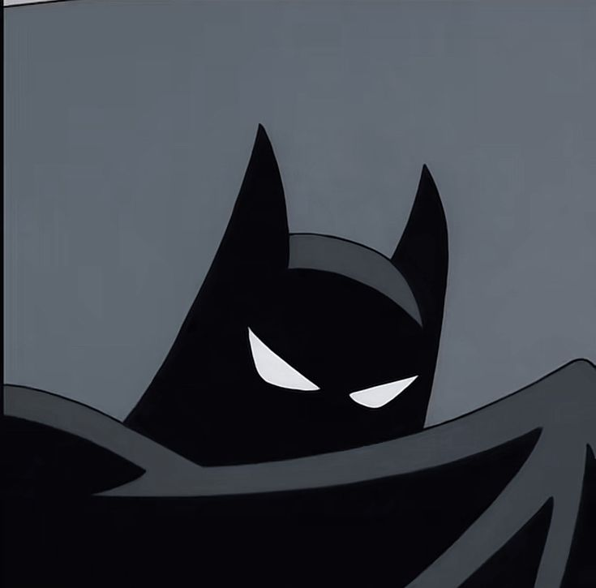
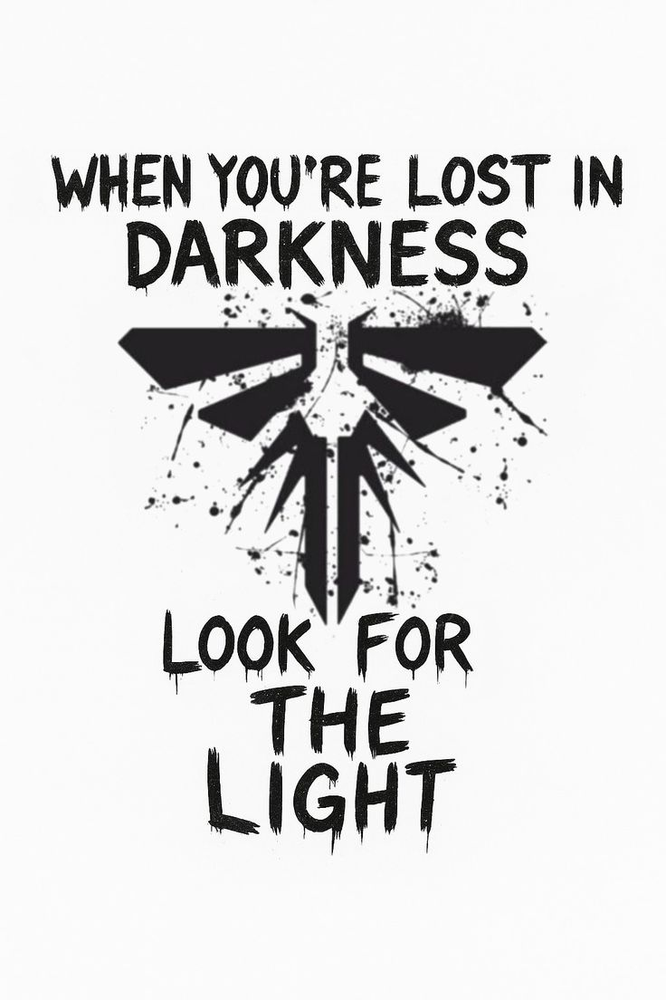
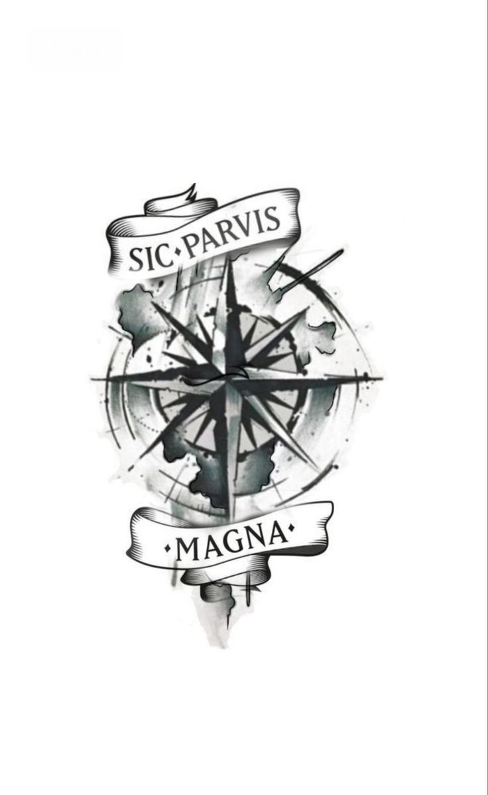
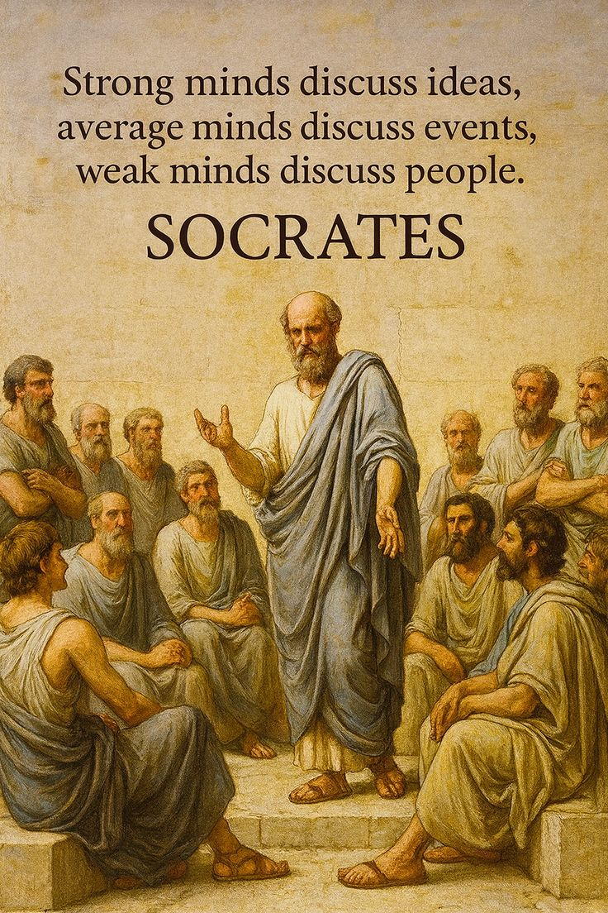

Bernardo Paolucci de Paiva Silvino
Engenharia de Software • ibmec
Sobre
Atualmente estou no primeiro período de Engenharia de Software no IBMEC e faço parte da liga de software da faculdade o IBtech, área pela qual desenvolvi grande interesse desde cedo. Minha conexão com a tecnologia começou principalmente por meio dos videogames, que despertaram em mim a curiosidade sobre como as coisas funcionam por trás das telas. Essa curiosidade se transformou em um interesse sólido por programação, já que sempre busco entender o “porquê” de tudo. Além disso, tenho grande afinidade com a área de exatas e uma lógica bem desenvolvida, o que contribui diretamente para meu desempenho acadêmico.
Sou uma pessoa comunicativa, com facilidade para socializar e me adaptar a novos ambientes. Gosto de sair da minha zona de conforto e encarar desafios que me permitam crescer, tanto pessoal quanto profissionalmente. Acredito que essa disposição para o novo é uma das minhas principais qualidades, pois me permite aprender constantemente com diferentes situações e pessoas.
Minha trajetória também foi marcada por experiências que fortaleceram meu senso de responsabilidade e maturidade. Saí da casa dos meus pais aos 15 anos, o que exigiu independência desde cedo. Além disso, tive a oportunidade de fazer um intercâmbio de seis meses no Canadá, onde ,alem de aprender melhor a lingua inglesa, tive contato com diversas culturas e estilos de vida. Essas vivências ampliaram minha visão de mundo e reforçaram meu interesse em explorar novas realidades.
Pensando no futuro, tenho o objetivo de trabalhar para empresas internacionais e conhecer diferentes países, culturas e pessoas. Acredito que a tecnologia é uma área que conecta o mundo, e quero fazer parte desse cenário global, contribuindo com meu conhecimento e, ao mesmo tempo, aprendendo continuamente.
Habilidades
- Adaptabilidade
- Comunicação
- Sociabilidade
- Proatividade
- HTML
- CSS
- JavaScript
- Git
Mídia

"Quando estiver perdido na escuridão, procure pela luz"
-Vagalumes
"grandeza em pequenos começos"
-Sir Francis Drakes
Mentes fortes discutem ideias, mentes medianas discutem eventos,mentes fracas discutem pessoas.
-SocratesContato
- github.com/bpaolucci
- bepaolucci@gmail.com